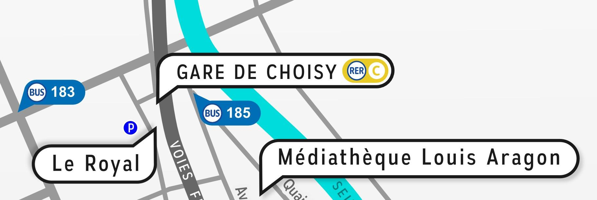

Accueil PSES
Pas Sage en Seine 2018
Resist with the Rabbit
DIY - Privacy - Internet - Sécurité - hacktivisme - etc...
Faites preuve de curiosité
Fin de la campagne de dons dans :
Pas Sage en Seine 2018
Resist with the Rabbit
DIY - Privacy - Internet - Sécurité - hacktivisme - etc...
Vous pouvez retrouver le programme de l'édition 2017 ici : https://passageenseine.fr/programme/
Les appels à participation, pour l'édition 2018 auron lieu du 1 au 31 mars 2018. Le programme sera annoncé début juin.
Pour être sûr de ne rien manquer, vous pouvez nous suivre sur Twitter ou vous abonner à la liste de diffusion.
À trés bientôt. :)
| ASN Association sans nom (Étudiants à l'école 42) | Jeudi | Vendredi | Samedi | Dimanche |
| Blackfields Network | Jeudi | Vendredi | Samedi | Dimanche |
| Duchess France | Jeudi | Vendredi | ||
| Emmabuntüs | Samedi | Dimanche | ||
| FDN/FFDN/Franciliens | Jeudi | Vendredi | Samedi | Dimanche |
| La Quadrature du Net | Jeudi | Vendredi | Samedi | Dimanche |
| Libre@Toi | Samedi | Dimanche | ||
| Respire | Dimanche | |||
| Seeraiwer | Samedi | Dimanche | ||
| Wikidebats | Samedi | Dimanche |
Le festival a lieu aux abords de la Médiathèque Aragon et de la Salle le Royal à Choisy-le-Roi, à 5 min à pied de la Gare de RER « Choisy-le-Roi » sur la ligne C.
La médiathèque Aragon (17 Rue Pierre Mendès France, 94600 Choisy-le-Roi) met à notre disposition la salle l'Escale pour les conférences, son espace convivial près de l'accueil pour certains ateliers et son rez-de-chaussée pour le village associatif
La salle du Royal (13 Avenue Anatole France, 94600 Choisy-le-Roi), ancienne salle de cinéma historique et emblématique de Choisy, nous accueille pour des conférences et projection.

Cette année nous accueillons Le cousin mouton qui vendra à manger sur place. Exceptionnellement pour l'évènement, le food truck proposera également de la nourriture végétarienne.

Un pad est disponible pour l'hébergement à cette adresse
Un appart-hôtel vient d'ouvrir ses portes à moins d'une minute de la médiathèque : http://www.allsuites-apparthotel.com/residences-hotelieres/all-suites-appart-hotel-choisy-le-roi
Tous les participant·es, conférencier·ères et volontaires pour notre festival doivent accepter le code de conduite suivant. Les organisateur·ices s’attacheront à faire respecter ce code durant l’événement. Nous attendons de la part de chaque participant·e une coopération pour assurer un environnement sain pour tous.
Pas Sage en Seine (PSES) se veut une expérience sans harcèlement. Nous, organisateur·ices, et signataires de ce code de conduite, nous engageons à ne tolérer aucune forme de harcèlement, quelles qu’en soient les circonstances. Les visiteur:euser, participant·es ou volontaires qui enfreindraient cette règle seront sanctionné·es et exclus du festival sur simple demande des organisateur·rices.
Le harcèlement comprend les commentaires verbaux, écrits ou gestuels offensants, au sujet du genre, de l’orientation sexuelle, du handicap, de l’apparence physique, de l’ethnie ou de la religion. Est considéré comme du harcèlement le fait de suivre, observer, photographier, filmer, enregistrer, imposer un contact physique à une personne sans son consentement ou à son insu. Le harcèlement se définit également par tout comportement visant délibérément à intimider une personne, y compris par le fait de l’interrompre systématiquement dans ses activités et ses échanges avec les autres participant·es. De même, il ne sera toléré aucune avance à caractère sexuelle déplacée. Il est enfin interdit de diffuser tout contenu à caractère sexuel dans un espace public, ni d’entamer toute activité, gestuelle, annonce à caractère sexuel.
Si vous vous sentez harcelé•e, ou si vous remarquez que quelqu’un est en train de subir une situation de harcèlement, contactez immédiatement un·e membre de l’organisation identifiable grâce un t-shirt spécifique mentionnant son statut.
I. En participant à PSES, j’apprends et je partage mon expérience avec d’autres participant·es de PSES, afin de faire progresser mes connaissances et celles des autres, pour un bénéfice individuel et collectif. Je co-crée l’expérience avec les autres participant·es, ainsi je suis préparé·e à contribuer par ma présence, ma sensibilité et mon énergie à la création de la meilleure expérience possible pour moi et pour les autres.
II. Je viens à PSES pour interagir avec les gens. Je comprends que les images et les propos suggestifs ou désobligeants peuvent offenser les autres participant·es, ce qui leur rendra l’expérience désagréable. Je comprends aussi que les gens peuvent avoir des sensibilités différentes des miennes. J’accepte sans réserve que quelque chose me soit rapporté comme offensant ou inacceptable dans le contexte de l’événement PSES et j’adapte mon comportement et mes propos en conséquence.
III. Je ne harcèle ou n’offense jamais intentionnellement un·e autre participant.e, en particulier sur la question du genre, de l’orientation sexuelle, du handicap, de l’apparence physique, de l’ethnie ou de la religion et ne tolère pas qu’un·e autre participant·e soit harcelé·e ou victime de harcèlement. Si je suis témoin d’une telle situation, j’informe l’auteur·e de la nature incorrecte de son comportement et j’avertis les organisateur·rices de PSES.
IV. Si je suis moi-même offensé·e ou harcelé·e, j’informe les gens autour de moi en qui j’ai confiance, ou d’une manière plus générale avec qui je me sens en sécurité, ainsi que les organisateur·rice.s de PSES. Une fois en sécurité, je désigne aux organisateur·rices le·la ou les responsables de ce comportement inadapté, et je peux, si je le souhaite, informer moi-même le·la ou les concerné·es, dans l’espoir qu’il s’agisse uniquement d’une maladresse ignorante et non une démarche consciente et malintentionnée. Je ne suis cependant tenu·e à aucune obligation de le faire.
V. Je comprends moi aussi que nous sommes tous différent·es et que ce qui est évidemment inconvenant pour moi ne l’est peut-être pas, ou pas autant, pour d’autres. Ainsi, j’essaie de pardonner aux autres les actions inopportunes qui auraient été commises en toute bonne foi, tout en gardant à l’esprit que ma priorité reste ma sécurité et celle des autres. Je réagis donc sans hésitation ni réserve en cas de situation inappropriée.
VI. J’ai confiance en la capacité des organisateur·rices de PSES mais aussi en celle des participant·es à créer ensemble la meilleure expérience possible pour tous, moi y compris. Je crois en la vocation de PSES qui est de tous nous faire grandir techniquement, méthodologiquement et humainement, et je n’oublie pas qu’il est également de ma responsabilité de faire de cet événement une réussite enrichissante sur tous les plans. Si moi ou un·e autre participant·e adopte un comportement pouvant compromettre cet aspect de l’événement, je m’attends à ce que les organisateur·rices de la conférence prennent les mesures adéquates, y compris l’expulsion des responsables et le recours aux autorités appropriées.
Mailing list : https://list.passageenseine.fr
IRC : irc.freenode.net/6697 (SSL) chan :#PSES2018
Depuis début 2017, l’équipe organisatrice de Pas Sage en Seine a créé l’association « White Rabbit - PSES » garantissant son indépendance pour organiser et gérer le festival.
« Cette association a pour objet l’organisation d’événements dans le domaine du numérique, de l’activisme, du hacking, de l’hacktivisme, de la protection de la vie privée et d’une manière générale, l’ensemble des opérations visant à favoriser son développement.
L’association a notamment pour objet l’organisation du festival Pas Sage En Seine (PSES) dont ses membres fondateurs en sont les créateurs et/ou les organisateurs historiques. » Extrait des statuts (article 2)
Les bénévoles qui participent activement à l’organisation du festival sont considérés comme « membres actifs » de l’association leur donnant un droit de vote à l’Assemblée Générale de l’association suivante.
Les membres bienfaiteurs sont les personnes ou organisations apportant leur soutien matériel et/ou financier à l’association sous forme de dons. Ils peuvent exercer un droit de vote à l’Assemblée Générale.
Les membres d’honneur sont les membres cooptés par le bureau en raison des services qu’ils ont rendus ou sont amenés à rendre à l’association. Ils peuvent exercer un droit de vote à l’Assemblée Générale.
Le bureau de l’association peut être contacté ici : bureau@passageenseine.fr
Vous pouvez nous joindre par mail en cliquant sur le lien suivant :
Le site passageenseine.org est hébergé par Bearstech
Le site passageenseine.fr est hébergé par White Rabbit-PSES
Archives et Vidéos
Jusqu'à 2016 : https://data.passageenseine.org/
Edition 2017 : https://archives.passageenseine.fr/